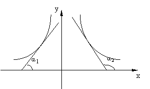

1. Возрастание и убывание функций
Функция  ,
дифференцируемая на интервале , возрастает
(убывает) на интервале тогда и
только тогда, когда
,
дифференцируемая на интервале , возрастает
(убывает) на интервале тогда и
только тогда, когда  (
( )
для всех .
)
для всех .
,
дифференцируемая на интервале , возрастает
(убывает) на интервале тогда и
только тогда, когда ()
для всех .
Геометрически это означает, что угол наклона
касательной к графику возрастающей (убывающей) дифференцируемой функции острый
(тупой), а угловые коэффициенты касательных соответственно положительны или
отрицательны.